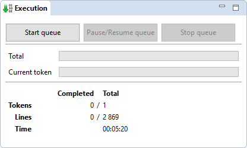
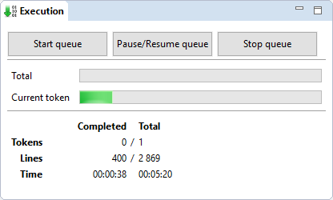
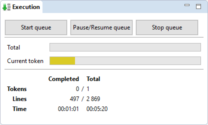

Execution¶
The execution view provides feedbacks about the current execution queue and basic controls about the execution.
A GCode program in the execution queue is called a token. It can be a file, a macro, a generated code from a modifier, etc...
| Tokens: | the number of completed token and the total number of token to execute |
|---|---|
| Lines: | the number of completed line and the total number of line to execute |
| Time: | the elapsed time and total time required for the queue (including elapsed time). This total time is a estimation and may vary depending on your machine capabilities. |
During execution, the progress bar will turn green.
When paused, the progress bar will turn yellow.
